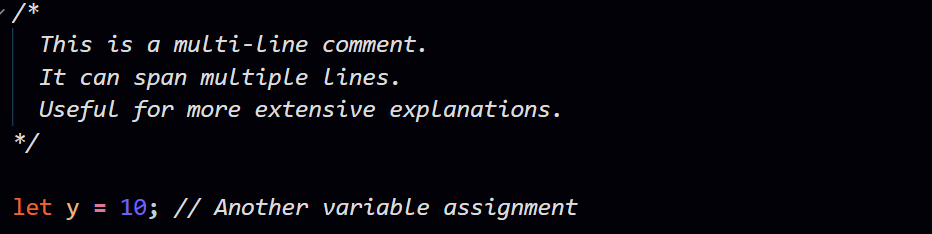
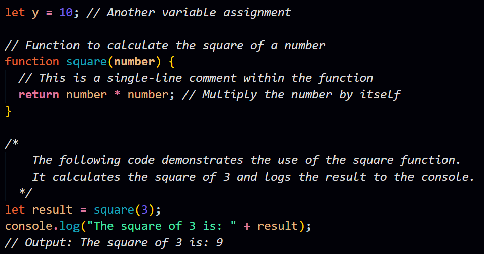

Q. Explain the importance of comments in JavaScript and provide examples of single-line and multi-line comments.
Ans.
Comments in JavaScript serve as annotations within the code that are not
executed by the JavaScript engine. They are essential for enhancing code
readability, providing explanations, and making it easier for other
developers (or even yourself) to understand the purpose and
functionality of different parts of the code. Here are some key reasons
why comments are important:
-
Documentation:
Comments document the code, explaining the logic, algorithms, or any complex operations. This is crucial for maintaining and updating code over time. -
Clarity:
Well-placed comments make the code more readable and understandable, especially for developers who are new to the codebase or are reviewing the code. -
Debugging:
Comments can be used to temporarily disable or comment out code for debugging purposes without removing the code entirely. -
Collaboration:
When working in a team, comments facilitate collaboration by providing insights into the code's intent and usage of specific techniques or patterns.
Now, let's look at examples of single-line and multi-line comments in JavaScript:
Single-line comments:
In the example above, // denotes a single-line comment. Anything following // on the same line is considered a comment.
Multi-line comments:
In this example, /* begins the multi-line comment, and */ ends it. Everything between these markers is treated as a comment, even if it spans multiple lines.
Here's a more practical example:
In this example, comments provide insights into the purpose of the code, the functionality of the square function, and the usage of the function to calculate and log the square of a number.